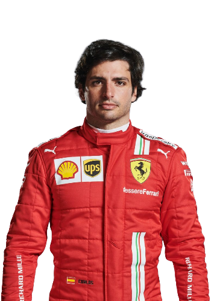

Charles Marc Hervé Perceval Leclerc (born 16 October 1997) is a Monégasque racing driver, currently racing in Formula One for Scuderia Ferrari. Leclerc won the GP3 Series championship in 2016 and the FIA Formula 2 Championship in 2017.
Leclerc made his Formula One debut in 2018 for Sauber, a team affiliated with Ferrari, for which he was part of the Ferrari Driver Academy. With Sauber having finished last the year before, Leclerc led the charge to improve the finishing position in the constructors' championship to eighth, being the higher-ranked of the two Sauber drivers.
Starting from 2019 and contracted until the end of the 2024 season, Leclerc is currently driving for Ferrari. He became the second-youngest driver to qualify on pole position in Formula One at the 2019 Bahrain Grand Prix. The 2019 season also saw Leclerc take his first career win in Belgium, followed by winning his first Italian Grand Prix as a Ferrari driver the week after. He won the Pole Trophy in the 2019 season becoming the youngest driver ever and the first non-Mercedes driver to win it since the trophy's inception in 2014.
 Carlos Sainz Vázquez de Castro (born 1 September 1994), otherwise known as Carlos Sainz Jr. or simply Carlos Sainz, is a Spanish racing driver competing in Formula One for Scuderia Ferrari. He is the son of Carlos Sainz, a double World Rally Champion, and the nephew of rally driver Antonio Sainz. In 2012 Sainz raced in the British and European Formula 3 championships for Carlin. He raced for DAMS in the 2014 Formula Renault 3.5 season, winning the championship before moving to F1 with Toro Rosso.
Sainz moved to McLaren for the 2019 season, while at the same time ending his contract with Red Bull Racing. At the 2019 Brazilian Grand Prix Sainz took his maiden Formula One podium finish with third. Sainz added another podium by finishing second at Monza the following year before departing for Ferrari at the end of that season. Sainz scored his third and fourth podiums by finishing second at the 2021 Monaco Grand Prix and then third at the 2021 Hungarian Grand Prix, both for Scuderia Ferrari. He also came third at the 2021 Russian Grand Prix and the 2021 Abu Dhabi Grand Prix.